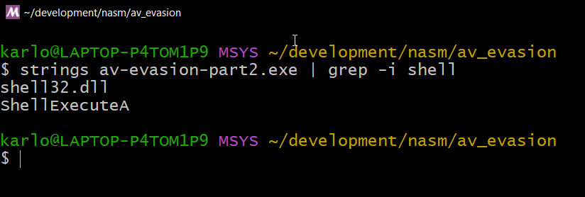

In my last blog post, I discussed a way to hide parameter strings from being detected by an anti-virus. The solution was simple and it worked. However, it was incomplete as strings of function calls and loaded DLLs were still detectable in memory.

In this post I'll be talking about the other technique from the same blog post we were following before. It does a good job of explaining the concept which I'll be covering here too. I will also be writing the code in assembly as an added bonus, so we can better understand what goes on under the hood.
The problem
Let's revisit our code from the last time. We have two functions being called ShellExecuteA and ExitProcess.
#include <windows.h>
#include <shellapi.h>
int main(void)
{
char ca_notepad[] = { 'n','o','t','e','p','a','d',0 };
ShellExecuteA(0, "open", ca_notepad, NULL, NULL, SW_SHOW);
ExitProcess(0);
}
Upon compiling the program, the compiler takes the list of all functions used and places them in the executable (In this case, in the .rdata segment) as a readable string:

A function name like ShellExecuteA will be sure to raise some eyebrows so we do not want it to be detectable. To hide this we need to do load the DLL at runtime by using LoadLibrary and GetProcAddress.
Coding in C
LoadLibrary accepts a string containing the DLL that we want to load.
HANDLE hShell32 = LoadLibrary("shell32.dll");
This loads the DLL's code into memory and returns a handle to that location. We can see the result of this when we look at the memory map in a debugger. Here's the memory map prior to calling LoadLibrary:

And here's what it looks like after:

The LoadLibrary API loaded shell32.dll along with it's dependencies into memory. We can also see that it automatically handled where the new DLLs will be placed. In this case, in between pre-existing ones.
Aside: How do we know which DLL is needed?
We can find out which DLL is needed by a function by looking at it's MSDN documentation. Scroll at the end of every function documentation to see the "Requirements" section that lists the DLL that it needs.

LoadLibrary then returns a HANDLE object which we can then pass to GetProcAddress.
_ShellExecuteA fShellExecuteA = (_ShellExecuteA) GetProcAddress(hShell32, "ShellExecuteA");
GetProcAddress looks through the library we loaded and returns the address of the ShellExecuteA function. This address needs to be cast to a typedef first before it can be called. This means we need to know the structure of the typedef, which we can determine by looking at the "Syntax" section in MSDN.
Here's the syntax for ShellExecuteA according to its documentation:
HINSTANCE ShellExecuteA(
[in, optional] HWND hwnd,
[in, optional] LPCSTR lpOperation,
[in] LPCSTR lpFile,
[in, optional] LPCSTR lpParameters,
[in, optional] LPCSTR lpDirectory,
[in] INT nShowCmd
);
And here's our typedef implementation:
typedef HINSTANCE (*_ShellExecuteA) (
HWND hwnd,
LPCSTR lpOperation,
LPCSTR lpFile,
LPCSTR lpParameters,
LPCSTR lpDirectory,
INT nShowCmd
);
When everything is setup properly, the variable fShellExecuteA can now be used as a function.
fShellExecuteA(0, "open", ca_notepad, NULL, NULL, SW_SHOW);
Combining these together, this is what our code will look like:
#include <windows.h>
typedef HINSTANCE (*_ShellExecuteA) (
HWND hwnd,
LPCSTR lpOperation,
LPCSTR lpFile,
LPCSTR lpParameters,
LPCSTR lpDirectory,
INT nShowCmd
);
int main(void)
{
HANDLE hShell32 = LoadLibrary("shell32.dll");
_ShellExecuteA fShellExecuteA = (_ShellExecuteA) GetProcAddress(hShell32, "ShellExecuteA");
char ca_notepad[] = { 'n','o','t','e','p','a','d',0 };
fShellExecuteA(0, "open", ca_notepad, NULL, NULL, SW_SHOW);
ExitProcess(0);
}
This is not yet done, however, as strings.exe can still detect our strings. This is because we now have strings "shell32.dll" and "ShellExecuteA" as parameters for LoadLibrary and GetProcAddress. And these are placed in the .data segment in memory.

This is where we can use the technique that we used in part 1. By declaring the string as an array as a local variable, the data is placed on the stack instead of in the .data segment.
Applying this technique gives us the following:
char ca_shell32[] = { 's','h','e','l','l','3','2','.','d','l','l', 0 };
HANDLE hShell32 = LoadLibrary(ca_shell32);
char ca_shellExA[] = { 'S','h','e','l','l','E','x','e','c','u','t','e','A', 0 };
_ShellExecuteA fShellExecuteA = (_ShellExecuteA) GetProcAddress(hShell32, ca_shellExA);
And now we can see that it works!

Converting to assembly
As promised, we'll be converting the code above into x64 windows assembly. It's an extra step, but can give us a better understanding by approaching it from a different programming language.
Starting from the beginning, we'll be using LoadLibraryA and GetProcAddress to dynamically load the ShellExecuteA function at runtime.
If we fast forward a bit, here's what we'll end up with:
lea rcx, [str_shell32] ; Load "shell32.dll" string
sub rsp, 32
call LoadLibraryA ; Call "LoadLibraryA"
add rsp, 32
mov rcx, rax ; Save result of LoadLibraryA to rcx
lea rdx, [str_shexa] ; Load "ShellExecuteA" string
sub rsp, 32
call GetProcAddress ; Call "GetProcAddress"
add rsp, 32
mov rbx, rax ; The address of "ShellExecuteA" is saved to rbx
...
...
call rbx ; Call "ShellExeecuteA"
Wait, that's it? Yes!
This is the one of those rare moments that the Assembly code is more straightforward than C. This is because the value returned by GetProcAddresss is already an address. Since assembly deals with memory addresses, there's no need for any conversion like we did in the C version. The address can be called directly.
And just like the previous one, the code above is still not complete. The "shell" strings are still visible via strings.exe so we need to apply the technique again from Part 1. I won't be showing it step by step here anymore as it's quite lengthy.
This means that this example piece of code:
lea rcx, [str_shell32] ; Load "shell32.dll" string
sub rsp, 32
call LoadLibraryA ; Call "LoadLibraryA"
add rsp, 32
Will now be like this:
sub rsp, 16 ; Place "shell32.dll" string to the stack
addstr2stack "s", "h", "e", "l", "l", "3", "2", ".", "d", "l", "l", 0x0
lea rcx, [rsp]
sub rsp, 32
call LoadLibraryA ; Call "LoadLibraryA"
add rsp, 32
addstr2stack is a macro we've written before in part 1. It makes declaring an string array easier.
Combining everything again, here's the final assembly code with comments:
push rbp
mov rbp, rsp
sub rsp, 32
;; = START LOADLIBRARY ===========================================
sub rsp, 16 ; Place "shell32.dll" string to the stack
addstr2stack "s", "h", "e", "l", "l", "3", "2", ".", "d", "l", "l", 0x0
lea rcx, [rsp]
sub rsp, 32
call LoadLibraryA ; Call LoadLibraryA
add rsp, 32
add rsp, 16 ; Release "shell32.dll" string from stack
;; = END LOADLIBRARY ===========================================
;; = START GETPROCADDRESS ===========================================
mov rcx, rax ; Save value to rcx (1st parameter register)
sub rsp, 16 ; Place "ShellExecuteA" string to the stack
addstr2stack "S", "h", "e", "l", "l", "E", "x", "e", "c", "u", "t", "e", "A", 0x0
lea rdx, [rsp]
sub rsp, 32
call GetProcAddress ; Call GetProcAddress
add rsp, 32
add rsp, 16 ; Release "ShellExecuteA" from stack
;; = END GETPROCADDRESS ===========================================
;; = START SHELLEXECUTEA ===========================================
mov r12, rax ; Save address of "ShellExecuteA" to r12 (To be called later)
sub rsp, 16 ; Place "notepad" string to the stack
addstr2stack "n", "o", "t", "e", "p", "a", "d", 0x0
lea r8, [rsp]
push 0x5
push 0x0
xor r9, r9
lea rdx, [msg_open]
xor rcx, rcx
sub rsp, 32
call r12 ; Call "ShellExecuteA", jump to addres
add rsp, 32
add rsp, 16 ; Release "notepad" string from stack
;; = END SHELLEXECUTEA ===========================================
xor rax, rax
call ExitProcess
I know there's a lot to digest with the code above. I've made the flow similar to the flow of the C program so you can review them side by side if you feel lost. Hopefully, the comments and the separators would also help.
Note: Pay special attention to how the stack is reserved (with
sub rsp, 16) and released (withadd rsp, 16). I did not discuss stack alignments as it's a lengthy explanation in itself. But just remember that we are releasing the data once we've finished passing it to the function.
If done correctly, the strings would not be detectable because the data is now on the stack and not in the .data segment.
It is important to note that anti-viruses can employ different techniques to do detection, but a huge part of their functionality will rely on detecting malicious strings. So at least, on that front, we now have an idea on how to defeat it.
You can view the code for part 1 and 2 on Github. Updates and fixes will be placed there.
I might post more assembly shenanigans in the future, so stay tuned.
And as always, for any questions or comments, feel free to reach out to me on Twitter or LinkedIn.